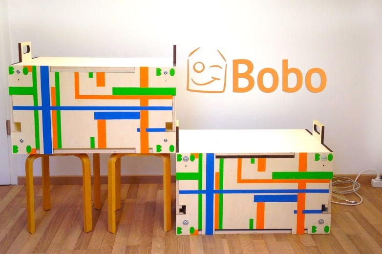

Official page of the MegaRPi project, the world's largest Raspberry Pi cluster!
The Project
MegaRPI project is an open-source, open-hardware, open-science project built on programmable hardware. We are particularly inspired by Raspberry Pi, which is a credit card sized computer that runs on Linux.
The principal aim of the project is to build a Cloud Computing Cluster from the scratch with a number of key qualities as the drivers. First and foremost, the Cluster should be easily affordable to acquire. In practice this means something around the cost of a MacBook Pro. Any school, institution, company and a private person should afford to buy it. As a cluster, a single instance of a cluster should carry enough capacity for the use in education, research and services. Physically, the cluster should be easily movable and it should be small sized. The rack design must stand time, be appealing and foremost it should be fit-for-the-purpose. Therefore, we place a lot of attention to the functionality of the cluster. To add to this challenge, the cluster should be auto-buildable, so anyone (all of you!) should be able to build it in less than half a day of work with material that be easily obtained from a store near you. Materials that are used should be ecological and we systematically avoid using materials with high carbon footprint (e.g. plastic). As a solution of this third generation rack design, we have introduced in our pages the “Bobo”, which carries all of the above characteristics.
Introducing Bobo
The first Raspberry Pi cluster rack built with "great design" principles.
Bobo is for educational use. Every school and university in the world should have one. Students learn how cloud computing operates in practice and can simulate all the operations performed by a cloud infra provider such as Amazon for example. Students can experiment, innovate and learn. The future of computing in a box is Bobo!
Bobo is for research use. Researchers interested practical aspects of cloud computing and services will benefit for having 100% control on their experimental setting. Researchers striving to solve the problems in distributed computing will also benefit widely on Bobo due to ability to build real life experimental settings with hundreds and thousands of Raspberry Pis on a global Bobo network.
Bobo is for business use. Bobo will offer a stable IT-service infrastructure for areas with harsh conditions. The aim is to power the Bobo with solar energy and connect it to the Internet via satellite connection. First experiments in this directions are already under way. This offers lucrative opportunities for many companies.
